Your Claude and ChatGPT limits, always in your Android shade — two accounts on one notification, a ring in the status bar, a ping when a window resets.
CLAUDE + CHATGPTALWAYS-ON NOTIFICATIONSTATUS-BAR RINGPACE CHARTRESET PINGSMULTI-ACCOUNT
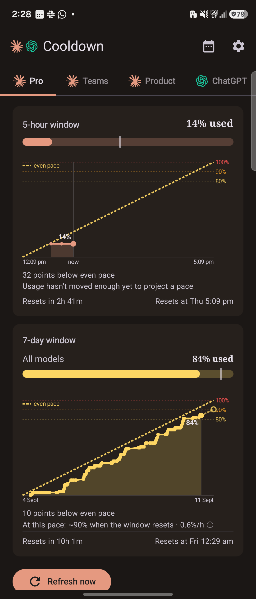
The app — a Claude account, in its room
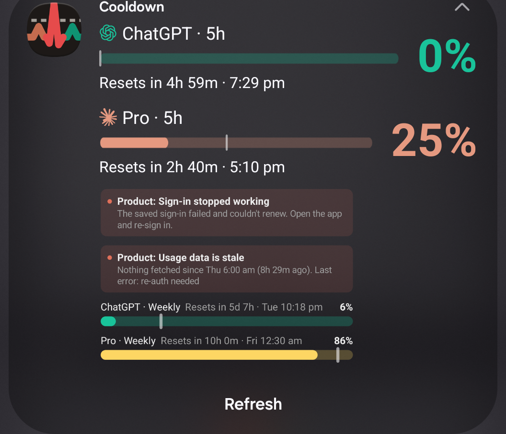
The notification — two accounts, expanded
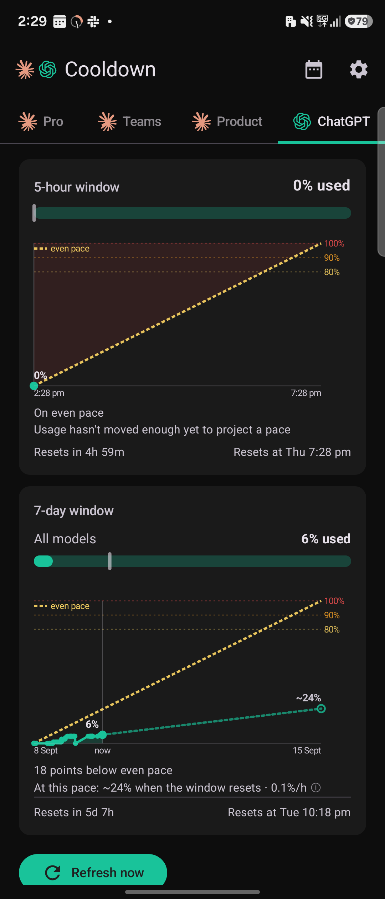
A ChatGPT account — same cards, its own room
Before you install: this is an unofficial personal tool — to read your usage it signs in as the Claude Code CLI against an undocumented Anthropic endpoint, and uses the Codex CLI's client against an undocumented OpenAI one, so there's a small risk either could revoke the token or flag the account. It's read-only and signs in once; full detail on page 4. Use it at your own discretion.
USER GUIDE
Version 1.6 · September 2026 Built by Robin Richard Rajan — with Claude Code (Fable 5 · Opus 4.8 · Opus 5 · Fable 5.1) Personal sideloaded app — not on any store · not affiliated with Anthropic, OpenAI or Google
☰
What it is & what's inside
Cooldown is a personal Android app for your Claude and ChatGPT plan limits — for as many accounts as you use, on either service. It shows the 5-hour and weekly rolling windows for each account (including per-model caps like Fable and Spark), when each resets, how far into the week you are, and forecasts when you'll hit a limit at your current pace. Its home is the always-on notification: two accounts side by side in the shade, a ring in the status bar, and a ping the moment a window resets.
📌 Always-on notification TWO ACCOUNTSOne silent notification carries a First and a Second account — each with its mark, bar and big percentage. Expand it for the weekly rows and per-model caps.
◎ Status-bar ringA tiny ring that fills with the 5-hour window, coloured in the account's own colour so you know whose it is — First, Second, or whichever is higher.
🔔 Reset pingsPer account and per window, Off / If busy / Always — the one notification that still posts on its own, so you know the moment you're back.
📈 Pace chartEvery reading plotted against an even-pace line — stay below it and you finish the window inside your limit.
👥 Claude + ChatGPTAdd as many accounts as you use, on either service — each in its own room: warm ivory and serif figures for Claude, cool neutral for ChatGPT.
📅 Usage historyA scrollable bar for every 5-hour session, week by week — see how many you ran and which hit 100%.
💳 Usage creditsPay-as-you-go credits as their own card — spent, total and what's left. Hidden if your plan has none.
🔒 Private, and backed upNo servers or telemetry; the token is Keystore-encrypted. History & settings survive a reinstall (token excluded).
Contents
★New in v1.6the two-account notification, four-tab Settings, the Pulse icon — and what left · page 3
1Installsideload the APK · page 4
2Connect your accountsClaude on the phone · page 4–5 · ChatGPT by code · page 6
3Backup: computer tokenpaste / QR from Claude Code · page 7
4Reading the screensbars, pace chart, credits, the two rooms · page 8
The always-on notification now carries a First and a Second account side by side — each with its provider's mark, its bar with the pace tick, and a big percentage in that half's warning colour. Expand it for both accounts' headers, the Weekly rows and any per-model caps. Each half is its own tap target. Pick the pair under Settings → Alerts → Show accounts. Full page on page 9.
◎ A ring that says whose it is
The status-bar icon is now one clean ring for the 5-hour window, drawn in the shown account's own colour — Claude terracotta, ChatGPT green — until it climbs to yellow, orange and red. At 100% the ring goes solid red with an ×. A new setting chooses which account it follows: First, Second, or whichever is higher.
🔔 Reset pings, per account
Every account gets its own 5h reset and Weekly reset ping, each Off / If busy / Always. They post as real notifications even with the always-on one running. Fixed on the way: an account left idle across a reset now pings too — before, only an account that kept chatting did.
⚙️ Settings on a diet: four tabs
Forty-three rows in thirteen sections became 24 rows in four swipeable tabs — Accounts · Alerts · Appearance · More. One "Show red past the pace mark" switch now covers the app and the notification; Usage credits only shows up for accounts that have a credit budget; Check for updates lives under More → Updates.
💓 The Pulse icon, and two rooms
A new launcher tile: an ECG beat on charcoal — Claude terracotta in, ChatGPT green out, the red spike crossing a dashed even-pace ceiling. No trademarks on the tile; colour carries identity. Inside, each tab is a room: Claude tabs get a warm ivory surface and serif figures, ChatGPT tabs a cool neutral one — the cards themselves are identical. The top bar leads with both marks, now the same size.
🧹 What left, and why
The home-screen widgets, the Quick Settings tile, the standalone threshold and pace alerts, and the three other notification styles and status-bar glyphs are gone. The notification does their job better and in one place. Placed widgets and tiles disappear when you update — nothing else to do. Sign-in, stale-data and update-available notices still appear as strips inside the notification's panel.
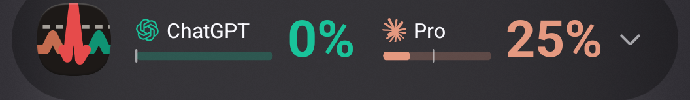
Collapsed — two accounts on one row
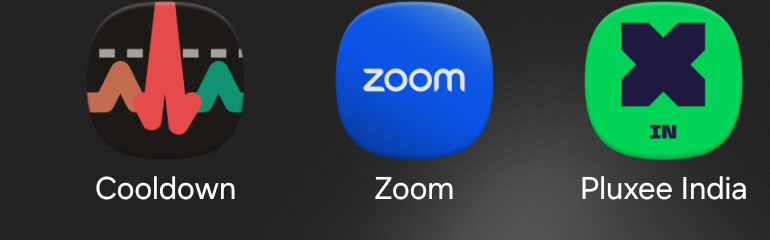
The Pulse tile in the app drawer
Updating from v1.0–v1.5 is in place — same signing key, so your sign-ins, history and settings all survive. Only the widgets and the tile leave your home screen and shade.
Cooldown · User Guide · v1.6 (September 2026)3
1
Install
Android 12+ · sideloaded APK · about a minute
Before you install — the honest part.Claude: to read your usage, Cooldown signs in with the same OAuth client as the Claude Code CLI (identical client ID and scopes) and identifies itself as claude-code when it calls an undocumented endpoint — deliberately, since otherwise it's routed to an aggressively rate-limited bucket. In effect it impersonates the official CLI. ChatGPT: same posture, one difference — it mints its own token via OpenAI's device-code flow using the Codex CLI's client ID, reads an undocumented endpoint, but identifies itself honestly as Cooldown, since OpenAI's endpoint doesn't penalise an unfamiliar client. Neither is sanctioned, and both companies' consumer terms restrict using consumer tokens in third-party tools, so installing means accepting a small but real risk that either could revoke the token or flag the account. What limits it: the app is read-only (never sends prompts or spends quota), signs in once per install, and is shared privately — never on a store. Use it at your own discretion.
Download the APK onto the phone from the latest GitHub release (github.com/robineam360/Cooldown/releases/latest). In-app, Settings → More → Check for updates links you straight to it.
Tap the APK. When Android warns about unknown apps, allow installs from the app you opened it with, then tap Install. A Play Protect "scan app?" prompt may appear — scan or install anyway; you know where this one came from.
Open Cooldown and allow notifications when asked — that's what powers the always-on notification and the reset pings.
Updating an existing install? From v0.13 onward, just install the new APK over it — sign-ins, settings and history survive. Coming to v1.6 from an earlier version: any home-screen widgets and the Quick Settings tile disappear on update; the always-on notification is their replacement. (Coming from v0.12 or earlier needs a one-time uninstall + reinstall — the signing key is permanent from v0.13 on.)
2
Connect your accounts
Personal and Work by default — add as many more as you use
The app starts with two account cards, Personal and Work — each with its own sign-in, polling, tab and reset pings. Tap "+ Add account" on the Accounts tab of Settings for a third, fourth, or more; each new one gets an editable name too. Every profile signs in right on the phone — no computer needed:
Open ⚙ Settings → Accounts and tap "Sign in on this phone" on the account's card.
If you have several browsers, a picker appears — choose the browser where that account is already logged in to claude.ai (e.g. Work in Chrome, Personal in Brave). That's how you control which account gets connected.
The browser opens Claude's sign-in. Log in if needed, then tap Authorize.
The page shows a code — tap Copy, switch back to the app, tap Paste, then Finish sign-in.
The card turns Active and usage loads: "signed in — usage fetched, polling started."
Works for Pro / Max and Team accounts alike, on any card. The sign-in is minted on the phone and is yours alone — no computer shares it, so nothing can rotate it away. It self-renews for about a month (the card shows "Sign-in expires around …"), and renewing is the same one-minute flow via "Re-sign in". An account with no token yet carries no tab — it appears the moment it's signed in.
Cooldown · User Guide · v1.6 (September 2026)4
2
Sign-in, step by step
What you'll see on screen
1 — Tap "Sign in on this phone", then pick your browser2 — Authorize in the browser (the standard Claude consent page)3 — Paste the code, Finish — signed in, usage loads, polling runs
Why the browser picker matters
The sign-in lands on whatever claude.ai account that browser is logged into. Keeping Work in Chrome and Personal in another browser gives you a clean, repeatable way to connect each profile to the right account — no logging in and out.
What the card shows afterwards
Status chip — Active / Needs re-auth
Plan badge — Pro, Max or Team
Last checked, with a one-tap "check now" button
Auto-renew countdown & last auto-renewed time
"Sign-in expires around …" (≈30-day estimate)
The screens above are from an earlier version — the cards and the sign-in flow are unchanged, the Settings screen around them now has four tabs (page 10).
Token safety: the sign-in is stored encrypted on the phone only (Android Keystore) and is never sent anywhere except Anthropic's own API. No servers, no telemetry, no analytics — nothing else ever sees it.
Cooldown · User Guide · v1.6 (September 2026)5
2
ChatGPT: sign in with a code
A short code, typed on this phone or any other device
A ChatGPT account is added the same way as a Claude one, and behaves the same way afterwards — its own tab, its half of the notification, its reset pings and history. Only the sign-in differs: instead of a browser round-trip and a pasted code, OpenAI shows you a short code to approve.
In ⚙ Settings → Accounts, tap "+ Add account". A sheet lists the three services — pick ChatGPT.
The app shows a code in large type and a countdown (the code is good for 15 minutes). Tap Copy code if you like.
Go to auth.openai.com/codex/device — tap Open in browser to do it right here, or type the address on your laptop. Either works; the code is not tied to this phone.
Log in to ChatGPT if needed, enter the code, and approve.
The sheet closes by itself and the new tab appears with your usage already loaded.
If something goes wrong
The code expired — the countdown ran out. Tap "Get a new code"; nothing is lost.
Denied — the approval was rejected in the browser. Start again.
Unavailable — OpenAI has the device flow switched off. Rare; the sheet tells you what to do.
You closed the app mid-flow — reopen it and the sheet comes back where it was, still counting down.
What the card shows afterwards
The ChatGPT mark before the account name
Status chip — Active / Needs re-auth
Plan badge — Plus, Pro, Team, Business…
Buttons: Sign in with a code · Refresh · Clear
No "expires around …" line — see the note below
How a ChatGPT tab reads differently
Mostly it doesn't — the same bars, the same pace chart. Three differences worth knowing:
A window you don't have isn't drawn. OpenAI suspended the 5-hour limit on some plans; if yours has no 5-hour window, that card simply isn't there — no dash, no empty bar. On the notification that account's headline is its Weekly window instead. (Claude accounts follow the same rule.)
Extra caps such as Spark appear as per-model rows under the weekly card, exactly like Claude's per-model caps.
Credits show as a plain "$12.40 balance" rather than a spent/total bar — OpenAI reports a balance, not a monthly cap. An unlimited plan shows nothing at all.
Why there's no expiry countdown. A Claude sign-in has a predictable ~30-day life, so the app shows one. OpenAI's has no published lifetime, and a wrong estimate is worse than none — so the app stays quiet and simply tells you if a refresh ever fails.
The phone mints its own sign-in. Nothing is copied from a computer — and deliberately so: reusing the token your desktop Codex CLI holds would trip OpenAI's rotation detection and sign you out of your own CLI. There is no paste or QR option for ChatGPT, and that's the reason.
Gemini is greyed out. The third row in the Add-account sheet is Google's Antigravity (Gemini). Its sign-in can't be completed on a phone today — Google's flow needs a callback only a desktop can answer. The row is shown, disabled, rather than hidden, so you know it's known about. It'll light up if that changes.
Cooldown · User Guide · v1.6 (September 2026)6
3
Backup: use a computer token
Claude accounts only — and only if the phone can't run the browser sign-in
Each Claude card keeps the old method under "Use a computer token instead": copying the token that the Claude Code CLI holds on the machine where that account is signed in. ChatGPT cards don't offer it — see page 6 for why.
Windows
Open C:\Users\<you>\.claude\.credentials.json in Notepad, select all, copy.
Or the clipboard way: get the JSON onto the phone's clipboard privately (Link to Windows, Quick Share, a synced note — delete it afterwards) and tap "Paste from clipboard". Either way the app validates the token with a live call and starts polling.
If the command finds nothing: the Claude Code CLI isn't installed or signed in on that machine (the desktop app's login is stored separately and can't be used). Install the CLI, run claude, sign in with the right account, retry.
Why phone sign-in is better: a pasted token is shared with that computer — if its Claude Code re-logs-in, the token rotates and the app asks for a re-paste. "Sign in on this phone" gives the phone its own token, so that can't happen.
"Use a computer token instead" reveals Paste from clipboard & Scan QRThe full walkthrough also lives in-app: "How do I get my token?" (macOS / Windows / Linux)
Cooldown · User Guide · v1.6 (September 2026)7
4
Reading the screens
One tab per signed-in account — swipe or tap to switch
Two rooms v1.6
The top bar leads with both provider marks. The selected account sets the room: a Claude tab has a warm ivory surface and serif headline figures; a ChatGPT tab is cool neutral in the default sans. The cards are otherwise identical.
5-hour window card
"X% used", the bar, and a split reset line — left:Resets in 3h 27m · right:Resets at Mon 9:40 PM.
Weekly window card
All models — your total weekly usage
Fable, Spark — any per-model cap the service reports. They share one reset footer; they reset together.
The pace chart
Every card carries a chart of that window: a dot for each reading the app has taken, dashed guides at 80 / 90 / 100%, a marker on the latest figure, and the forecast as a dashed tail to where you'll land. The x axis spans the whole window — start on the left, reset on the right, now marked in between.
The even-pace line — the one to watch
The dashed yellow diagonal runs from 0% at the window's start to 100% at its reset: spend evenly and you'd track it exactly. So below the line = you'll finish inside your limit; above it you're on course to run out early, and the overshoot shades amber. The readout says it in words too — "33 points below even pace", or "13 points above even pace". The same tick sits on every bar, in the app and on the notification; Appearance → Show red past the pace mark colours the bar beyond it.
Burn-rate forecast
After ~20 minutes of history and some movement: "100% at Thu 2:40 PM — 1h 20m before the reset" in red when you're heading for the wall, or "~62% when the window resets · 0.4%/h" when you're safe. It fits a line across every reading, so one early burst won't skew it.
Usage credits · Bar colours · History
Plans with pay-as-you-go credits get a third card: $5.99 / $100.00 with what's left; no budget, no card. Bars run your account's colour → yellow above 80% → orange above 90% → red at 100%. The calendar icon opens Usage history: a bar for every 5-hour session, red when one hit 100%, plus a per-week view — kept a year.
Data refreshes every 15 minutes (configurable, minimum 5); "Last success / Last attempt" sit under the Refresh button.
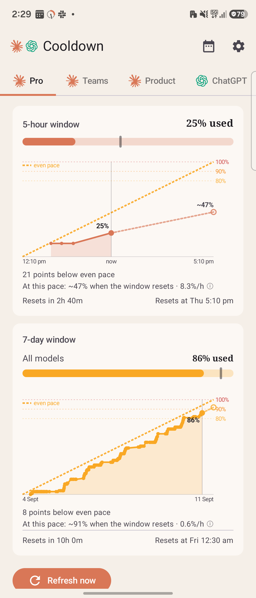
A Claude account — ivory room, serif figures, light theme
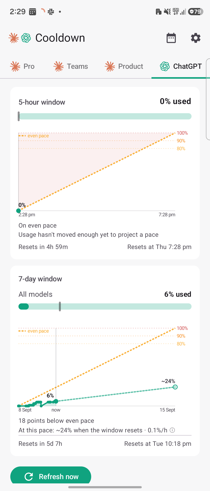
A ChatGPT account — neutral room, same cards, its own green
Cooldown · User Guide · v1.6 (September 2026)8
5
The always-on notification
Two accounts in the shade, a ring in the status bar — usage without opening anything
Collapsed — First and Second side by side: mark, name, bar with the pace tick, and the 5-hour figureExpanded — both headers with their reset lines, then the Weekly rows and one-tap Refresh
Two accounts, one row
Turn it on under Settings → Alerts → Always-on notification and pick a First and, optionally, a Second account under Show accounts. Collapsed, each half shows the provider's mark, the account name, an 8 dp bar with the neutral pace tick, and the 5-hour percentage in that half's colour — your account's own until 80%, then yellow, orange, red. An account with no 5-hour window shows its Weekly figure instead. With one account, or Second set to None, you get the single layout.
Expanded
Two header blocks — "Personal · 5h", "ChatGPT · Weekly" — each with a bigger bar, the reset line and a 36 sp figure; then the panel: each account's Weekly row, per-model caps, and any condition strips. Refresh is the one action. The wording is always 5h and Weekly.
Tapping it
Each half is its own target: it opens Cooldown on that account's tab — or, if you choose so under Tapping a number opens, that service's own app.
The status-bar ring
The tiny icon is a ring that fills with the shown account's 5-hour window, drawn in that account's colour — so the colour tells you whose it is. It steps through yellow, orange and red as the window fills; at 100% it goes solid red with an × in the middle. Status-bar ring shows picks First, Second, or Whichever is higher — the last one may switch during the day, and the colour change is the tell.
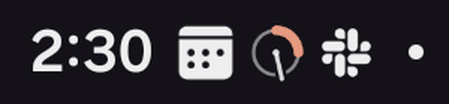
The ring in the status bar
Reset pings
The one notification that still posts on its own. For each account, set the 5h reset and the Weekly reset to Off / If busy / Always under Settings → Alerts → Reset pings. If busy pings only when that window had reached 80% before it reset — which kills most of the noise. An account left idle across the reset pings too.
Conditions
If an account's sign-in stops working, its data has gone stale for six hours, or an update is available, a small dot appears after its name collapsed and a labelled strip in the expanded panel. Nothing else posts separately.
Cooldown · User Guide · v1.6 (September 2026)9
6
Settings reference
Four swipeable tabs — Accounts · Alerts · Appearance · More
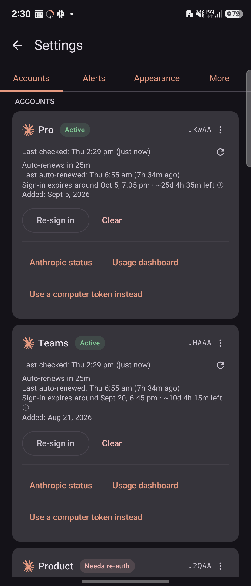
Accounts — cards, Add account
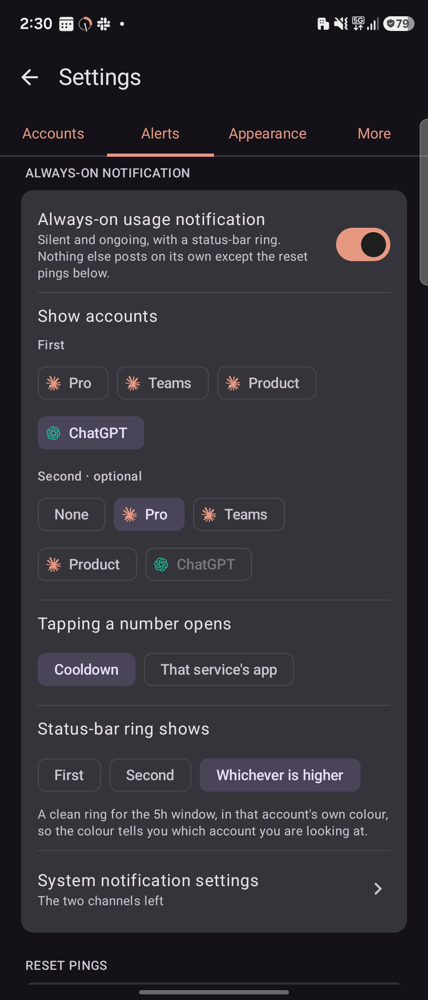
Alerts — the notification, the ring, reset pings
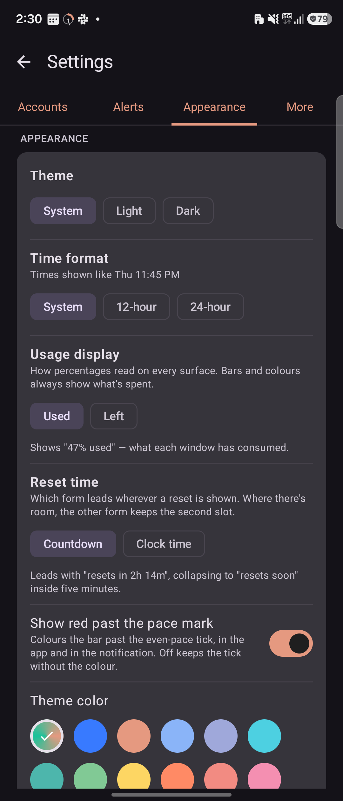
Appearance — theme, formats, colour
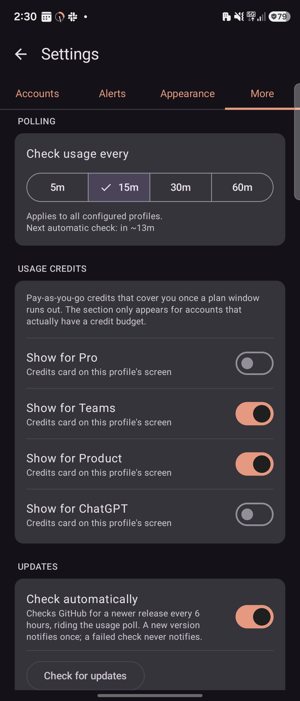
More — polling, updates, About
Tab · Setting
What it does
Accounts
One card per account: "Sign in on this phone" (with browser picker) or the paste / QR backup for Claude, "Sign in with a code" for ChatGPT. Once signed in: status chip, plan badge, last-checked, renew countdowns, Re-sign in / Clear. The card's ⋮ menu: Rename, Accent colour, Remove account. "+ Add account" at the bottom.
Alerts · Always-on
The always-on notification on/off, and Show accounts: a First chip row and a Second · optional one (None to run single).
Alerts · Tapping
Tapping a number opens Cooldown on that account's tab, or that service's app.
Alerts · Ring
Status-bar ring shows First / Second / Whichever is higher. System notification settings opens Android's per-channel controls.
Alerts · Reset pings
Per account: 5h reset and Weekly reset, each Off / If busy / Always.
Appearance
Theme System / Light / Dark · Time format 12-hour / 24-hour · Usage display Used / Left (every readout flips; bars always show what's spent) · Reset time Countdown / Clock time (which form leads) · Show red past the pace mark, one switch for the app and the notification · Theme colour: Per provider (default — each account wears its service's colour), Material You, Claude Orange and twelve more.
More
Polling every 5 / 15 / 30 / 60 min · Usage credits, a card switch per account — the section only appears for accounts that have a credit budget · Updates with Check for updates (asks GitHub for the latest release) · Diagnostics: share your log · About: version, credits, Share feedback. Tap the version 7× and a Debug section appends below.
On the Fold's inner screen each tab lays its cards out in two columns. Swipe between tabs or tap their names.
Cooldown · User Guide · v1.6 (September 2026)10
7
Troubleshooting & privacy
Symptom
Meaning / fix
A half is dimmed, "stale" strip
Polls for that account have failed for six hours — you're seeing the last known numbers, never a blank. Usually temporary; self-heals on the next successful poll.
"Re-auth needed"
The token and its refresh both failed. Tap "Re-sign in" on that card — or re-paste from a computer if you use the backup method. The notification shows a dot and a strip until it's fixed.
"Rate limited (429)"
The API asked us to back off; automatic retries with increasing delays (5 min → 1 h max).
"Token refresh failed (HTTP 429)"
Usually a dead refresh token, not real rate-limiting — the source machine's Claude Code rotated it. Fix: "Sign in on this phone", which gives the phone its own sign-in so this can't recur.
My widgets / tile vanished
Expected on the v1.6 update — they were removed. Turn on the always-on notification (Settings → Alerts); it does the same job from the shade.
No reset ping arrived
Check notification permission, that the account's 5h / Weekly reset isn't Off, and that If busy isn't hiding a window that never reached 80%.
Anything else
Settings → More → Diagnostics shares the app log; the Debug section (7 taps on the version) shows the last raw response.
Privacy & good-to-know
No servers, no telemetry, no analytics. The app talks only to api.anthropic.com (usage), platform.claude.com (sign-in code exchange + token refresh), claude.com (the sign-in page in your browser), auth.openai.com (the device-code sign-in) and chatgpt.com (usage) — plus api.github.com only when you tap Check for updates.
Tokens live in Android-Keystore-encrypted storage; cached usage numbers contain nothing sensitive.
Polling is deliberately gentle — 15-minute default, 3-minute manual floor, exponential backoff on 429s.
Reading either usage API with a consumer token outside the official clients is not covered by Anthropic's or OpenAI's consumer terms; personal-use risk was accepted when this was built.
Not affiliated with or endorsed by Anthropic, OpenAI or Google. Sideload-only, free, no accounts, no strings.
Cooldown · User Guide · v1.6 (September 2026)11
8
Version history & dev notes
Ver.
Highlights
1.6
Two accounts on one notification, Settings on a diet, the Pulse icon. The always-on notification carries a First and a Second account side by side, with the Weekly rows expanded; the status-bar ring drops its weekly dot and wears the shown account's colour (First / Second / Whichever is higher), solid red with an × at 100%. Reset pings are per account and per window, and now fire for an idle account too. Settings shrinks to four tabs — Accounts, Alerts, Appearance, More. New Pulse launcher tile; each tab is a room (ivory and serif for Claude, neutral for ChatGPT). Removed: the home-screen widgets, the Quick Settings tile, the standalone threshold and pace alerts, three notification styles and three status-bar glyphs — placed widgets and tiles disappear on update. Fixed: the two provider marks now render the same size. Built with Claude Fable 5.1, Opus 5 and Sonnet 5.
1.5
ChatGPT accounts, and the app becomes just "Cooldown". A ChatGPT account is added from "+ Add account" and signed in with a short code at auth.openai.com — no computer, no copied token — then behaves exactly like a Claude one. Each account carries its provider's mark and, by default, its provider's colour, overridable globally or per account. A window an account doesn't have is hidden rather than drawn as a dash. Gemini (Google Antigravity) is listed but greyed out. Built with Claude Opus 5 and Sonnet 5.
1.4
As many accounts as you use. Accounts moved to a proper registry — "+ Add account" for a third, fourth, or more, each with its own tab, renamed from its card's ⋮ menu. A clock-hand pace needle on the status-bar gauge. Fixed: alerts switched off in Settings left their strip stuck on screen. Built with Claude Sonnet 5.
1.3
A status-bar meter you can read, one alert surface. The tiny status-bar icon rebuilt around its real rendered size, with a theme-coloured 5-hour ring and a pace line; every alert for every profile folds into the pinned notification's one panel; a new hourglass launcher icon; Used-or-Left and countdown-or-clock display switches; typed error messages and a shareable app log.
1.1–1.2
Credits, a readable chart, pace everywhere. Pay-as-you-go usage credits on the main screen; a rebuilt pace chart with an even-pace line, per-reading dots and threshold guides; the even-pace tick on every bar; automatic update checks. (The widget faces and pace alerts these versions added were retired in 1.6.) Built with Claude Opus 5 and Fable 5.
1.0
First official release. The v0.1–v0.14 beta, now official: live 5-hour & 7-day windows for Personal + Work, usage history, pinned notification, granular alerts, burn-rate forecast, on-phone sign-in — private, no servers, backed up. Prototyped and built in a weekend by Claude Fable 5; the native sign-in Fable declined, and all the docs, finished by Claude Opus 4.8.
0.12–0.14
Native sign-in, history, distribution. "Sign in on this phone" — the PKCE flow Claude Code uses, browser picker included (0.12); usage history, the always-on notification, granular alerts, editable profile names, a permanent signing key (0.13); feedback by email and Check for updates against GitHub Releases (0.14).
0.1–0.11
The beta — first widget and app, Material You polish, usage alerts, the 0.5 redesign, two profiles, on-phone poll history with a burn-rate forecast, QR token import, plan badges and sign-in expiry warnings, the Claude Cooldown rename.
Cooldown · User Guide · v1.6 (September 2026)12
✦
For the curious
how it's built — and how to rebuild it
For future rebuilds
Single-module Android project — Kotlin · Jetpack Compose · WorkManager · OkHttp · min SDK 31, target 36. No widget framework any more: the notification is plain RemoteViews.
Build (signed release): JAVA_HOME=/opt/homebrew/opt/openjdk@17 ./gradlew :app:assembleRelease → APK in app/build/outputs/apk/release/. Signing reads a gitignored keystore.properties + .jks at the repo root — back them up; losing them means no more updates.
The launcher icon is four VectorDrawables on one 108-unit grid (foreground, background, monochrome, and the in-app round copy) — the same ECG geometry in each, so About and the drawer show one picture.
If Anthropic or OpenAI changes an undocumented response schema, the parsers ignore unknown fields; if bars go blank, check the raw JSON in the Debug section first.
Built by Robin Richard Rajan — with Claude Code, by a few Claude models.
Prototyped and built in a weekend by Claude Fable 5 — the app and this guide's first drafts. When the OAuth sign-in tripped Fable's cybersecurity guardrails, Claude Opus 4.8 built that handshake and finished the docs. Opus 5 and Sonnet 5 brought ChatGPT aboard; Fable 5.1 ran the v1.6 arc — the two-account notification, the diet and the Pulse tile. If you'd like the APK or want to build something like this, just ask.